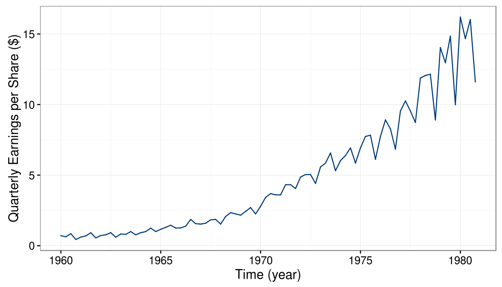
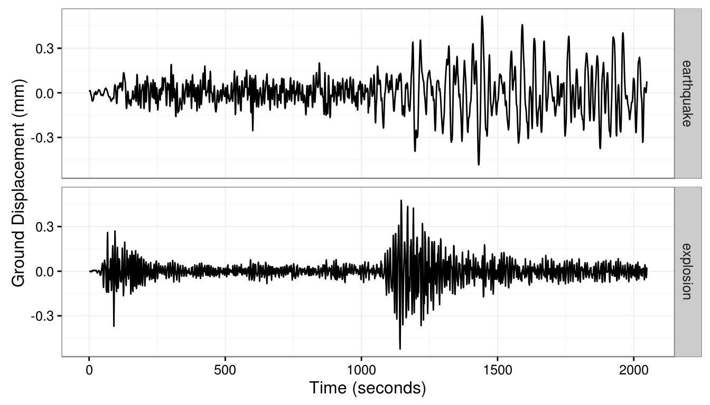
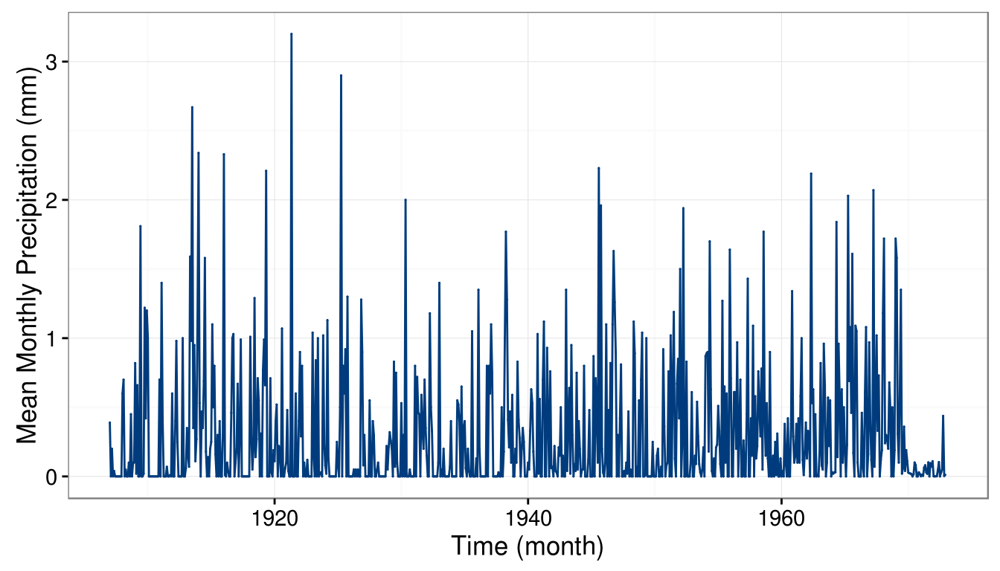
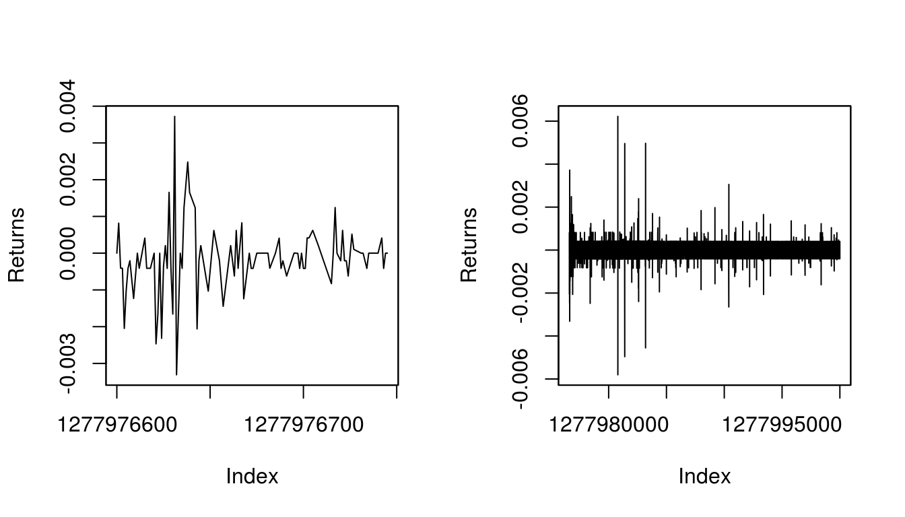

1.2 Exploratory Data Analysis for Time Series
When dealing with relatively small time series (e.g. a few thousands), it is often useful to look at a graph of the original data. These graphs can be informative to “detect” some features of a time series such as trends and the presence of outliers.
Indeed, a trend is typically assumed to be present in a time series when the data exhibit some form of long term increase or decrease or combination of increases or decreases. Such trends could be linear or non-linear and represent an important part of the “signal” of a model. Here are a few examples of non-linear trends:
Seasonal trends (periodic): These are the cyclical patterns which repeat after a fixed/regular time period. This could be due to business cycles (e.g. bust/recession, recovery).
Non-seasonal trends (periodic): These patterns cannot be associated to seasonal variation and can for example be due to an external variable such as, for example, the impact of economic indicators on stock returns. Note that such trends are often hard to detect based on a graphical analysis of the data.
“Other” trends: These trends have typically no regular patterns and are over a segment of time, known as a “window”, that change the statistical properties of a time series. A common example of such trends is given by the vibrations observed before, during and after an earthquake.
# Load data
data(jj, package = "astsa")
# Construct gts object
jj = gts(jj, start = 1960, freq = 4, name = 'Johnson and Johnson Quarterly Earnings',
unit = "year")
# Plot time series
autoplot(jj) + ylab("Quarterly Earnings per Share ($)")
One trait that the graph makes evident is that the data contains a non-linear increasing trend as well as a yearly seasonal component. In addition, one can note that the variability of the data seems to increase with time. Being able to make such observations provides important information to select suitable models for the data.
Moreover, when observing “raw” time series data it is also interesting to evaluate if some of the following phenomena occur:
- Change in Mean: Does the mean of the process shift over time?
- Change in Variance: Does the variance of the process evolve with time?
- Change in State: Does the time series appear to change between “states” having distinct statistical properties?
- Outliers Does the time series contain some “extreme” observations? Note that this is typically difficult to assess visually.
# Load data
data(EQ5, package="astsa")
data(EXP6, package="astsa")
EQ5.df = fortify(EQ5)
EQ5.df$type = "earthquake"
EXP6.df = fortify(EXP6)
EXP6.df$type = "explosion"
eq.df = rbind(EQ5.df, EXP6.df)
# Plot time series
ggplot(data = eq.df, aes(Index, Data)) + geom_line() + facet_grid( type ~ .) +
ylab("Ground Displacement (mm)") + xlab("Time (seconds)") + theme_bw()
From the graph, it can be observed that the statistical properties of the time series appear to change over time. For instance, the variance of the time series shifts at around \(t = 1150\) for both series. The shift in variance also opens “windows” where there appear to be distinct states. In the case of the explosion data, this is particularly relevant around \(t = 50, \cdots, 250\) and then again from \(t = 1200, \cdots, 1500\). Even within these windows, there are “spikes” that could be considered as outliers most notably around \(t = 1200\) for explosion series.
Extreme observations or outliers are commonly observed in real time series data, this is illustrated in the following example.
# Load data
hydro = read.csv("data/precipitation.csv", header=T, sep=";")
# Construct gts object
hydro = gts(hydro[,2], start = 1907, freq = 12, name = 'Precipitation Data',
unit = "month")
# Plot data
autoplot(hydro) + ylab("Mean Monthly Precipitation (mm)")
Next, we consider an example coming from high-frequency finance to illustrate the limitations our current framework.
library(timeDate)
# Load "high-frequency" Starbucks returns for Jul 01 2011
data(sbux.xts, package = "highfrequency")
# Plot returns
par(mfrow = c(1,2))
plot(sbux.xts[1:89], main = " ", ylab = "Returns")
plot(sbux.xts, main = " ", ylab = "Returns")
It can be observed on the left panel that observations are not equally spaced. Indeed, in high-frequency data the intervals between two points is typically not constant and, even worse, is a random variable. This implies that the time when a new observation will be available is in general unknown. On the right panel, one can observe that the variability of the data seems to change during the course of the trading day. Such a phenomenon is well known in the finance community since a lot of variation occurs at the start (and the end) of the day while the middle of the day is associated with small changes. Moreover, clear extreme observations can also be noted in this graph at around 11:00
Finally, let us consider the limitations of a direct graphical representation of a time series when the sample size is large. Indeed, due to visual limitations, a direct plotting of the data will probably result in an uninformative aggregation of points between which it is unable to distinguish anything. This is illustrated in the following example.
The code below retrieves some data from an IMU and plots it directly:
# Load packages
library(gmwm)
library(imudata)
# Load IMU data
data(imu6, package = "imudata")
# Construct gst object
Xt = gts(imu6[,1], name = "Gyroscope data", unit = "hour", freq = 100*60*60)
# Plot time series
autoplot(Xt) + ylab(expression(paste("Error ", (rad/s^2))))
Although a linear trend and other processes are present in this signal (time series), it is practically impossible to understand or guess anything from the plot.